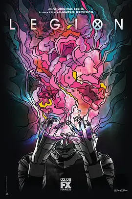

7.9
大群 第一季
Legion Season 1
2017
美国
评分 7.9
导演:
诺亚·霍利 / 迈克尔·乌彭达尔 / 拉尔沙·康达基 / 蒂姆·米兰特斯 / 村井浩
演员:
丹·史蒂文斯 / 瑞秋·凯勒 / 安伯·明迪桑德 / 奥布瑞·普拉扎 / 比尔·欧文
类型:
剧情,动作,科幻
剧情简介
故事围绕大卫·哈勒展开，他长期辗转于精神病院，习惯了幻听与幻觉交织的混乱日常。开场便笼罩着一种诡异的静默：病房的白墙、突如其来的噪声、他难以分辨的影像，都让观众步入他的意识深处。他看似沉静，却始终处在情绪与感知即将崩裂的边缘。大卫的思维跳跃而敏感，面对外界刺激常显得慌乱，然而那些似乎“疯癫”的片段背后，隐隐流露出异常强大的能量。一次意外的相遇让他的世界出现一道裂缝。细微的眼神、电光般的触动，让他意识到困扰自己的幻象并非纯粹的疾病，而是与自身力量紧密相关。随后出现的陌生人、隐秘组织以及层层错落的记忆碎片，将他推入更深的疑问之中。他开始试图探寻真相，却在每一步调查中看到更多无法解释的场景：时间的错乱、空间的重叠、他人情绪的突变，都像是在暗示他体内潜藏着无法控制的变种能力。在与他人接触的过程中，大卫的个性逐渐清晰。他温和、迟疑，却在关键时刻展现出强烈的求生本能。身边人也并非背景化的陪衬，他们的过往、恐惧与挣扎不断渗入叙事：坚硬外壳下的脆弱、嬉笑背后的伤口、冷静疗法中蕴含的风险，都让整体气氛复杂而张力十足。随着时间推进，他的力量与精神状态交织成一条不断翻涌的暗流，使现实与幻觉的边界愈发模糊。整季节奏时而沉缓，时而爆发。画面营造出的压迫感与迷离氛围，使每一次记忆回溯和能力觉醒都充满不确定性。大卫试着理解世界的方式，也成为观众进入故事的路径：混乱是真相的一部分，而他越是逼近真相，越能感受到那些隐藏势力与过往秘密正在逐步浮出水面。